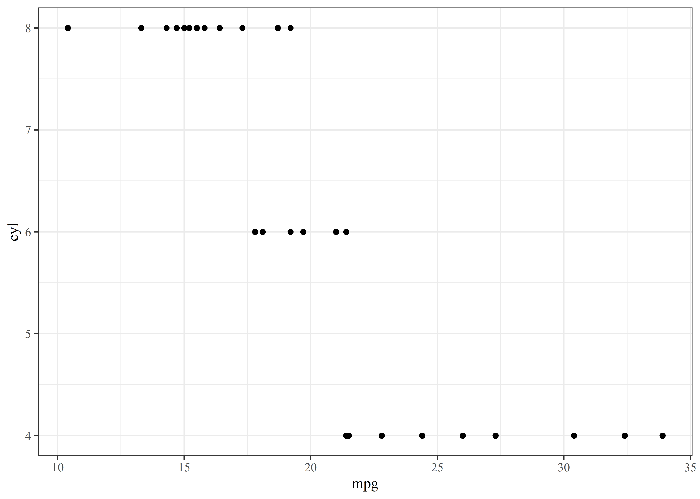
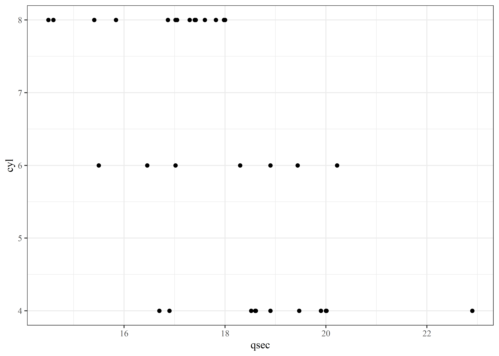
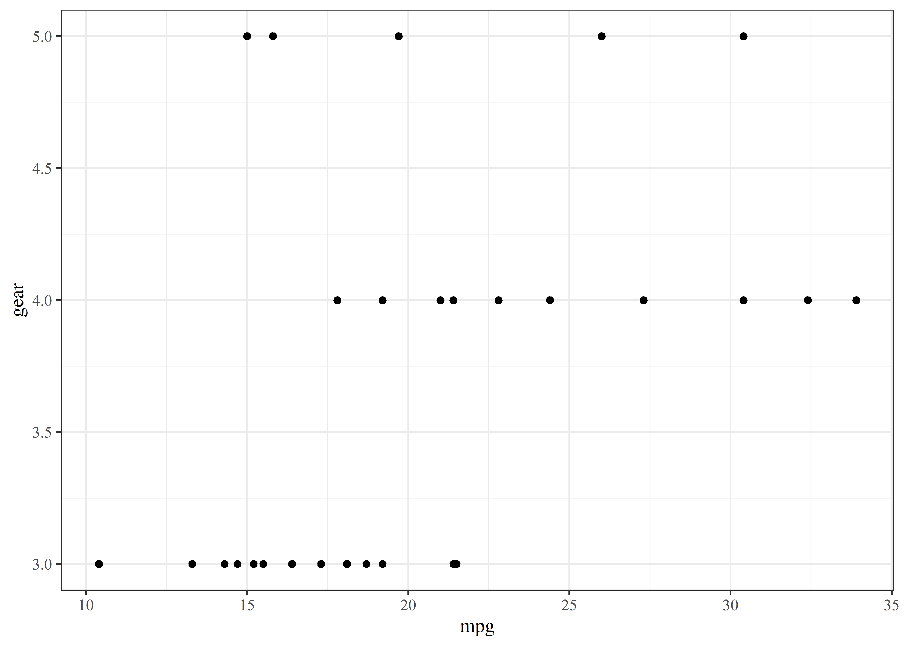
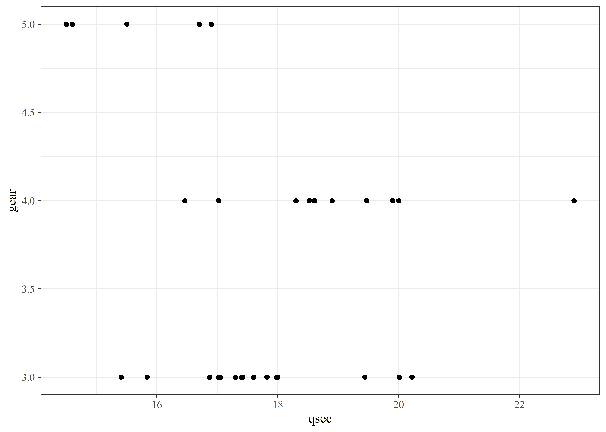
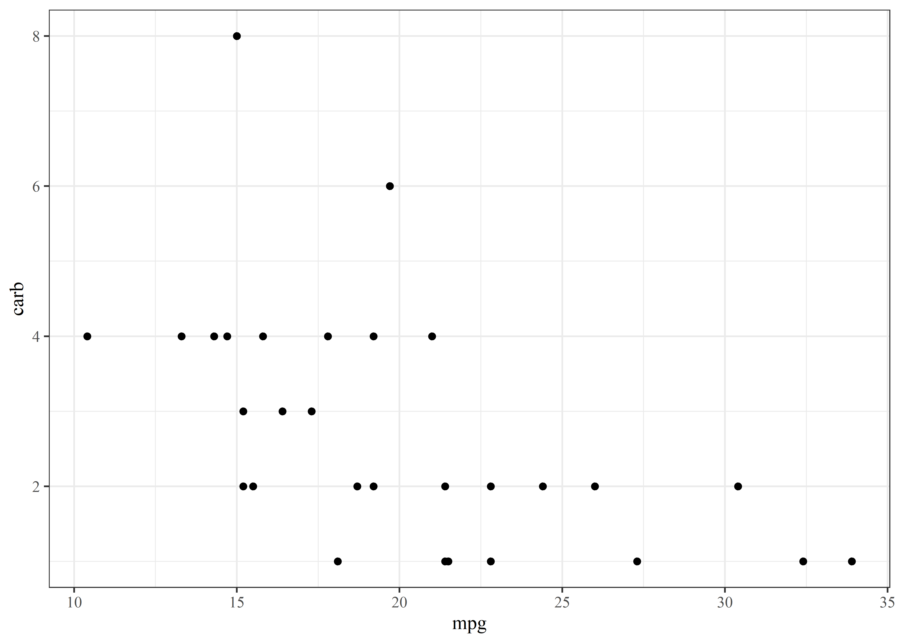
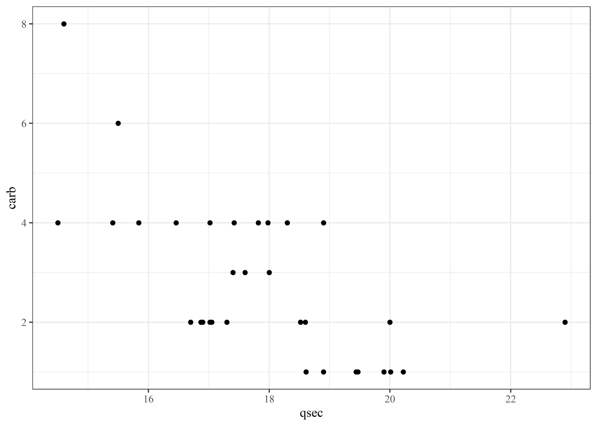
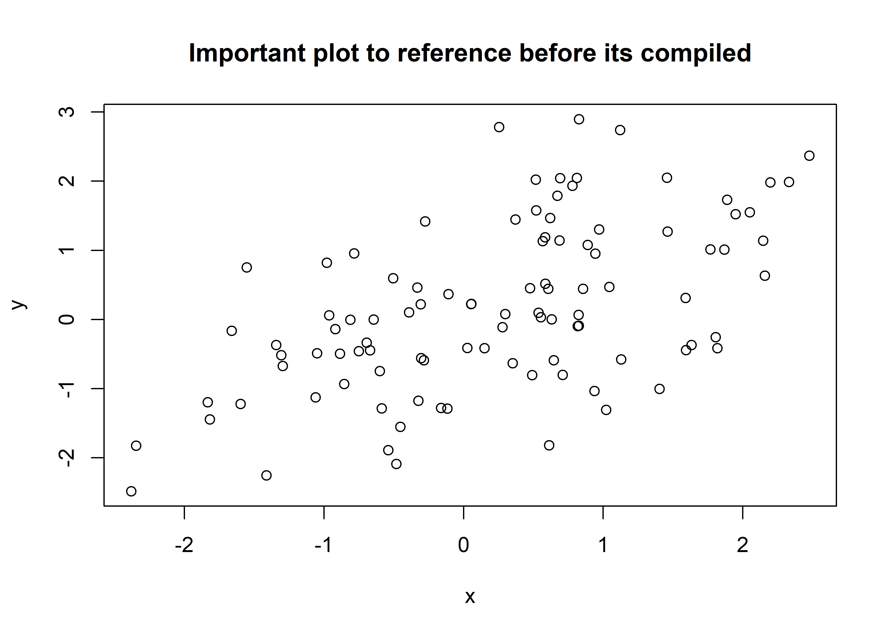
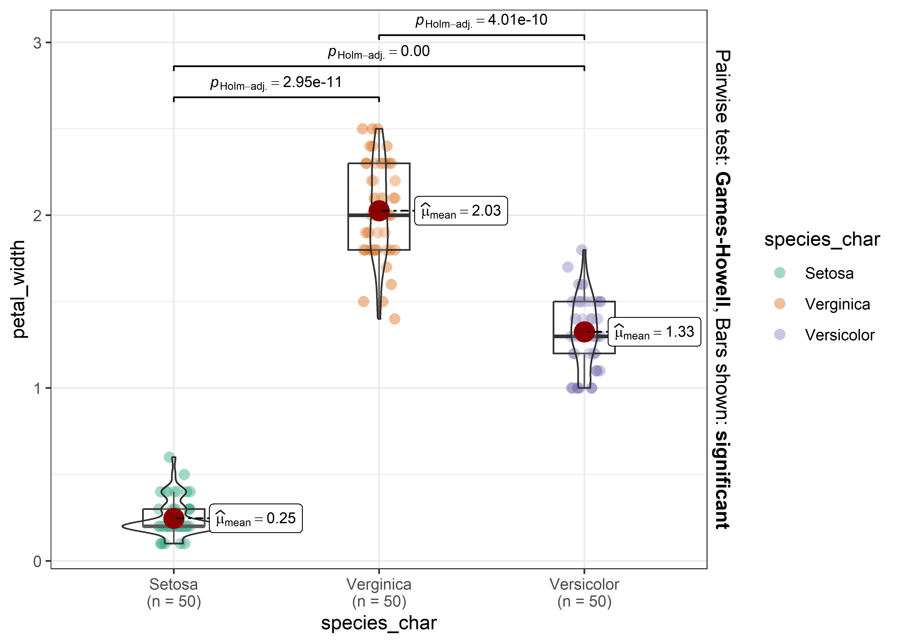

N = 32 |
|
| cyl | |
| 4 | 11 (34) |
| 6 | 7 (22) |
| 8 | 14 (44) |
Cookbook
Title page
List of abbreviations
Executive summary
More corporate name for ‘Abstract’. A hefty chunk of stakeholders won’t read anything else. Example of referencing a later compiled figure.
This is my report template in Quarto beefed up a bit. It has most Rmd features and can generate .docx. PDF can be generated via Word (save as..). The auto-generated .html is nice too. Computationally intensive stuff should be referenced. None of this Vignette precompile nonsense I’ve been working so hard to implement :( Computationally intensive stuff should be referenced externally.
Links can be given in this format (for html versions): link
If you’re feeling cocky, spruce up your report with model descriptions in Latex, eg.:
\[\begin{align} \begin{aligned} FPR = \frac{FP}{N} = \dfrac{FP}{FP+TN}\\ TPR = \frac{TP}{P} = \dfrac{FP}{FP+FN} \end{aligned} \end{align}\]\[log(Cool variable\_{i,j}) = \alpha_0 + \alpha_1\times Independent\ variable_1 + \alpha_2\times Independent\ variable_{2,i,j} \\+ \alpha_3\times Sex_i + \alpha_4\times Independent\ variable_{3,i,j} \\+ \delta_{0,i}+\delta_{1,i}+ + \epsilon_{i,j}\]
where,
- i is the subject number,
- j is the time point,
- k is the treatment,
- \(\epsilon\) is the residual error, and
- \(\delta\) represents the random effects.
Note
You can do boxes, tips and warnings like this
Introduction
Description of the study
Data extraction
Missing data
Cyclic child Rmd call
With regards to my teacher ATZS whose work is plagiarized within. It is kind of horrible cross-referencing all that stuff within; recommend using only if there are 10+ variables to go through. Alternatively you can put tables/graphs in functions and call them with get(varname) after you set varname<-““.
cyl
Table
Figures


gear
Table
N = 32 |
|
| gear | |
| 3 | 15 (47) |
| 4 | 12 (38) |
| 5 | 5 (16) |
Figures


carb
Table
N = 32 |
|
| carb | |
| 1 | 7 (22) |
| 2 | 10 (31) |
| 3 | 3 (9.4) |
| 4 | 10 (31) |
| 6 | 1 (3.1) |
| 8 | 1 (3.1) |
Figures


Plot compilation to be referenced

Tables
Tables may be in a huxtable object for “seamless” word processing. The resulting table is ugly.
Characteristic |
Setosa, N = 50 |
Verginica, N = 50 |
Versicolor, N = 50 |
| These are the width of the petals | 0.20 (0.20 – 0.30) | 2.00 (1.80 – 2.30) | 1.30 (1.20 – 1.50) |
| These are the length of the petals | 1.50 (1.40 – 1.58) | 5.55 (5.10 – 5.88) | 4.35 (4.00 – 4.60) |
| These are the width of the sepals | 3.40 (3.20 – 3.68) | 3.00 (2.80 – 3.18) | 2.80 (2.53 – 3.00) |
| These are the length of the sepals | 5.00 (4.80 – 5.20) | 6.50 (6.23 – 6.90) | 5.90 (5.60 – 6.30) |
| This is a date column to illustrate transformations | 2022-01-01 to 2022-02-19 | 2022-04-11 to 2022-05-30 | 2022-02-20 to 2022-04-10 |
| Median (IQR); Range | |||
Having a custom ref. docx file, I played around with the formatting and cooked up something passable. Its not modifiable however.
| Characteristic | Setosa, N = 50 | Verginica, N = 50 | Versicolor, N = 50 |
|---|---|---|---|
| These are the width of the petals | 0.20 (0.20 – 0.30) | 2.00 (1.80 – 2.30) | 1.30 (1.20 – 1.50) |
| These are the length of the petals | 1.50 (1.40 – 1.58) | 5.55 (5.10 – 5.88) | 4.35 (4.00 – 4.60) |
| These are the width of the sepals | 3.40 (3.20 – 3.68) | 3.00 (2.80 – 3.18) | 2.80 (2.53 – 3.00) |
| These are the length of the sepals | 5.00 (4.80 – 5.20) | 6.50 (6.23 – 6.90) | 5.90 (5.60 – 6.30) |
| This is a date column to illustrate transformations | 2022-01-01 to 2022-02-19 | 2022-04-11 to 2022-05-30 | 2022-02-20 to 2022-04-10 |
| 1 Median (IQR); Range |
You will face an issue where a package outputs a “marvellously formatted” html table which would be horrible for your use case. That is a promise, but don’t know how to handle it.
| These are the width of the petals |
|||
| Predictors | Estimates | CI | p |
| (Intercept) | -0.09 | -0.20 – 0.02 | 0.109 |
| Character representation of the species: Verginica |
0.84 | 0.55 – 1.12 | <0.001 |
| Character representation of the species: Versicolor |
0.44 | 0.23 – 0.64 | <0.001 |
| These are the length of the petals |
0.23 | 0.16 – 0.30 | <0.001 |
| Observations | 150 | ||
| R2 / R2 adjusted | 0.946 / 0.944 | ||
Plots
Plots are nothing fancy.

Text outputs; prints computationally intensive output loaded at the beginning.
3.14Remarks
MD5 checksum of the database used
C:/OneDrive_DKM/-/Dinamikus Kiválóság Menedzsment - General/Stats_R/R/MartysCookbook/inst/extdata/Iris.xls “1ed4b9d5418675e017479de339aff352”
Other information regarding the document’s compilation
Analyses were conducted using the R Statistical language (version 4.3.1; R Core Team, 2023) on Windows 10 x64 (build 19045), using the packages rmarkdown (version 2.25; Allaire J et al., 2023), lubridate (version 1.9.3; Grolemund G, Wickham H, 2011), huxtable (version 5.5.2; Hugh-Jones D, 2022), gtsummary (version 1.7.2; Sjoberg D et al., 2021), ggplot2 (version 3.4.4; Wickham H, 2016), roxygen2 (version 7.2.3; Wickham H et al., 2022), dplyr (version 1.1.3; Wickham H et al., 2023), knitr (version 1.45; Xie Y, 2023), pagedown (version 0.20; Xie Y et al., 2022) and kableExtra (version 1.3.4.9000; Zhu H, 2023).
References
- Allaire J, Xie Y, Dervieux C, McPherson J, Luraschi J, Ushey K, Atkins A, Wickham H, Cheng J, Chang W, Iannone R (2023). rmarkdown: Dynamic Documents for R. R package version 2.25, https://github.com/rstudio/rmarkdown.
- Grolemund G, Wickham H (2011). “Dates and Times Made Easy with lubridate.” Journal of Statistical Software, 40(3), 1-25. https://www.jstatsoft.org/v40/i03/.
- Hugh-Jones D (2022). huxtable: Easily Create and Style Tables for LaTeX, HTML and Other Formats. R package version 5.5.2, https://CRAN.R-project.org/package=huxtable.
- R Core Team (2023). R: A Language and Environment for Statistical Computing. R Foundation for Statistical Computing, Vienna, Austria. https://www.R-project.org/.
- Sjoberg D, Whiting K, Curry M, Lavery J, Larmarange J (2021). “Reproducible Summary Tables with the gtsummary Package.” The R Journal, 13, 570-580. , https://doi.org/10.32614/RJ-2021-053.
- Wickham H (2016). ggplot2: Elegant Graphics for Data Analysis. Springer-Verlag New York. ISBN 978-3-319-24277-4, https://ggplot2.tidyverse.org.
- Wickham H, Danenberg P, Csárdi G, Eugster M (2022). roxygen2: In-Line Documentation for R. R package version 7.2.3, https://CRAN.R-project.org/package=roxygen2.
- Wickham H, François R, Henry L, Müller K, Vaughan D (2023). dplyr: A Grammar of Data Manipulation. R package version 1.1.3, https://CRAN.R-project.org/package=dplyr.
- Xie Y (2023). knitr: A General-Purpose Package for Dynamic Report Generation in R. R package version 1.45, https://yihui.org/knitr/.
- Xie Y, Lesur R, Thorne B, Tan X (2022). pagedown: Paginate the HTML Output of R Markdown with CSS for Print. R package version 0.20, https://CRAN.R-project.org/package=pagedown.
- Zhu H (2023). kableExtra: Construct Complex Table with ‘kable’ and Pipe Syntax. http://haozhu233.github.io/kableExtra/, https://github.com/haozhu233/kableExtra.
Time of compilation
2023-12-09 18:02:09.564797
Appendix
This is how put all your code into an appendix.
fil <- here::here("inst","extdata","Iris.xls")
source( here::here( "inst", "example_cookbook", "functions", "load_stuff.r"))
source( here::here( "inst", "example_cookbook", "functions", "wrangling.r"))
# source_all_files(here::here("inst","example_quarto","backend")) # Run slow stuff;
##recommend running separately
load_all_Rdata(directory=here::here("inst","example_cookbook","backend")) # Load slow suff's output
tools::md5sum(fil) # %>% as.character # Uncomment reporting path is not desirable
sessionInfo() %>% report::report() %>% cat()
Sys.time() %>% as.character %>% cat
save.image(file = here::here("inst","example_quarto","end_state.rdata"))
plot(x,y)
valtozok <- c("cyl", "gear", "carb")
fig_directory <- paste0(
#here::here("inst","example_cookbook"),
"/figures/")
# Get the current value
current_fig_path <- knitr::opts_chunk$get('fig.path')
out <- NULL
for (i in 1:length(valtozok)) {
out <- c(out, paste0("\n### ", valtozok[i], "\n")) # Defining "title"
# Set the fig.path for each iteration
fig_path <- #knitr::current_input() %>%
#dirname() %>%
paste0("/figure_cycl/")
params <- list(x = valtozok[i],
top_level = 4,
figname_prefix = valtozok[i])
out <- c(out,
knitr::knit_child(here::here("inst","example_cookbook",'_cyclic_chap2.Rmd'),
quiet = T,
options = opts_chunk$get()
#envir = globalenv()
))
}
out <- paste(out, collapse = "\n")
# Reset fig.path to its default value
knitr::opts_chunk$set(fig.path = current_fig_path)
set.seed(12345)
x <- rnorm(100)
y <- 0.5 * x + rnorm(100)
plot(x,y, main = "Important plot to reference before its compiled")
# generating the table which is comp.expensive for some reason
tab <- data %>%
dplyr::select(!(species_no)) %>%
gtsummary::tbl_summary(
by = species_char
)
tab %>%
as_hux_table()
tab %>%
gtsummary::as_kable_extra(table.attr = 'data-quarto-disable-processing="true"',
caption = "Example table")
mod <- lm(petal_width ~ species_char + petal_length, data)
sjPlot::tab_model(mod)
ggstatsplot::ggbetweenstats(data,
species_char,
petal_width,
results.subtitle = FALSE) +
theme_bw()
cat(pi_estimate)
# Defining stuff, including the renaming scheme, and the structure of the output
if(!exists("child_counter")) {
child_counter <- 1
} else {
child_counter <- child_counter + 1
}
if(!exists("params")) {
params <- list(x = "cyl",
top_level = 2,
figname_prefix = "cyl"
)
}
knitr::opts_chunk$set(fig.process = function(x) {
x2 <- knitr::opts_current$get("label") %>%
paste0(., '-') %>%
sub(., '', x, fixed = T) %>%
paste0(fig_directory,"/",.)
if (file.rename(x, x2)) x2 else x
})
mtcars[[params$x]] %>%
as.data.frame %>%
`colnames<-`(params$x) %>%
tbl_summary() %>%
martys_table_style(caption. = paste0("Frequency of ",params$x," categories"))
# fig.path=paste0(fig_directory, params$figname_prefix, '-fig1-')
mtcars %>%
ggplot( aes(x = mpg,
y = .data[[params$x]])) +
theme_default_ggplot +
geom_point()
# fig.path=paste0(fig_directory, params$figname_prefix, '-fig1-')
mtcars %>%
ggplot( aes(x = qsec,
y = .data[[params$x]])) +
theme_default_ggplot +
geom_point()
# resetting stuff
knitr::opts_chunk$set(
fig.process = NULL # Critical, leads to nasty complications if removed
# This auto-renames output figs and is called afterwards if not reset
)
# Defining stuff, including the renaming scheme, and the structure of the output
if(!exists("child_counter")) {
child_counter <- 1
} else {
child_counter <- child_counter + 1
}
if(!exists("params")) {
params <- list(x = "cyl",
top_level = 2,
figname_prefix = "cyl"
)
}
knitr::opts_chunk$set(fig.process = function(x) {
x2 <- knitr::opts_current$get("label") %>%
paste0(., '-') %>%
sub(., '', x, fixed = T) %>%
paste0(fig_directory,"/",.)
if (file.rename(x, x2)) x2 else x
})
mtcars[[params$x]] %>%
as.data.frame %>%
`colnames<-`(params$x) %>%
tbl_summary() %>%
martys_table_style(caption. = paste0("Frequency of ",params$x," categories"))
# fig.path=paste0(fig_directory, params$figname_prefix, '-fig1-')
mtcars %>%
ggplot( aes(x = mpg,
y = .data[[params$x]])) +
theme_default_ggplot +
geom_point()
# fig.path=paste0(fig_directory, params$figname_prefix, '-fig1-')
mtcars %>%
ggplot( aes(x = qsec,
y = .data[[params$x]])) +
theme_default_ggplot +
geom_point()
# resetting stuff
knitr::opts_chunk$set(
fig.process = NULL # Critical, leads to nasty complications if removed
# This auto-renames output figs and is called afterwards if not reset
)
# Defining stuff, including the renaming scheme, and the structure of the output
if(!exists("child_counter")) {
child_counter <- 1
} else {
child_counter <- child_counter + 1
}
if(!exists("params")) {
params <- list(x = "cyl",
top_level = 2,
figname_prefix = "cyl"
)
}
knitr::opts_chunk$set(fig.process = function(x) {
x2 <- knitr::opts_current$get("label") %>%
paste0(., '-') %>%
sub(., '', x, fixed = T) %>%
paste0(fig_directory,"/",.)
if (file.rename(x, x2)) x2 else x
})
mtcars[[params$x]] %>%
as.data.frame %>%
`colnames<-`(params$x) %>%
tbl_summary() %>%
martys_table_style(caption. = paste0("Frequency of ",params$x," categories"))
# fig.path=paste0(fig_directory, params$figname_prefix, '-fig1-')
mtcars %>%
ggplot( aes(x = mpg,
y = .data[[params$x]])) +
theme_default_ggplot +
geom_point()
# fig.path=paste0(fig_directory, params$figname_prefix, '-fig1-')
mtcars %>%
ggplot( aes(x = qsec,
y = .data[[params$x]])) +
theme_default_ggplot +
geom_point()
# resetting stuff
knitr::opts_chunk$set(
fig.process = NULL # Critical, leads to nasty complications if removed
# This auto-renames output figs and is called afterwards if not reset
)